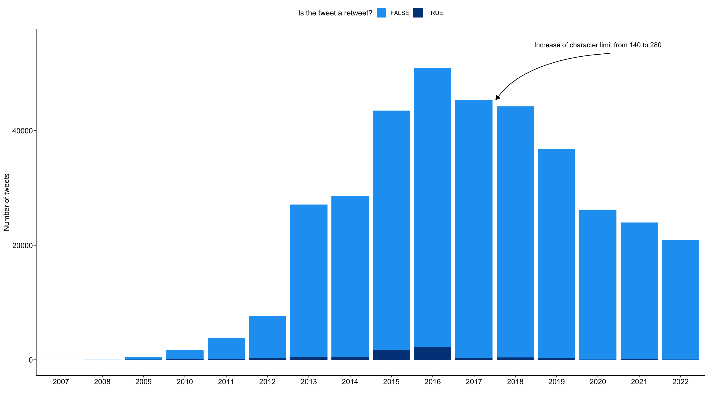
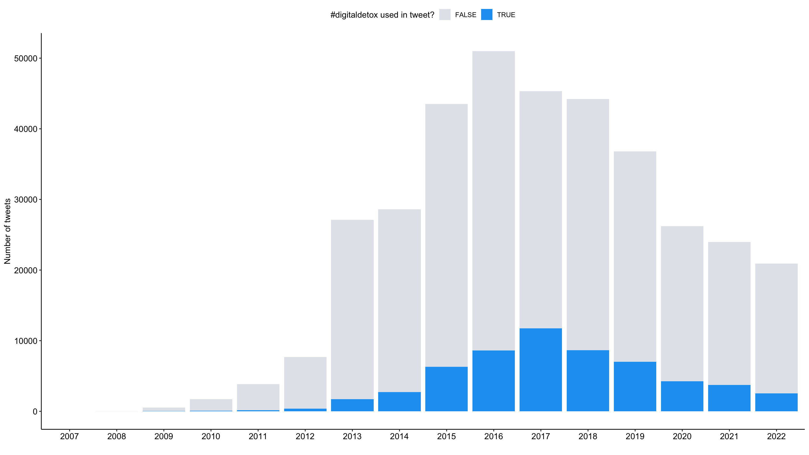
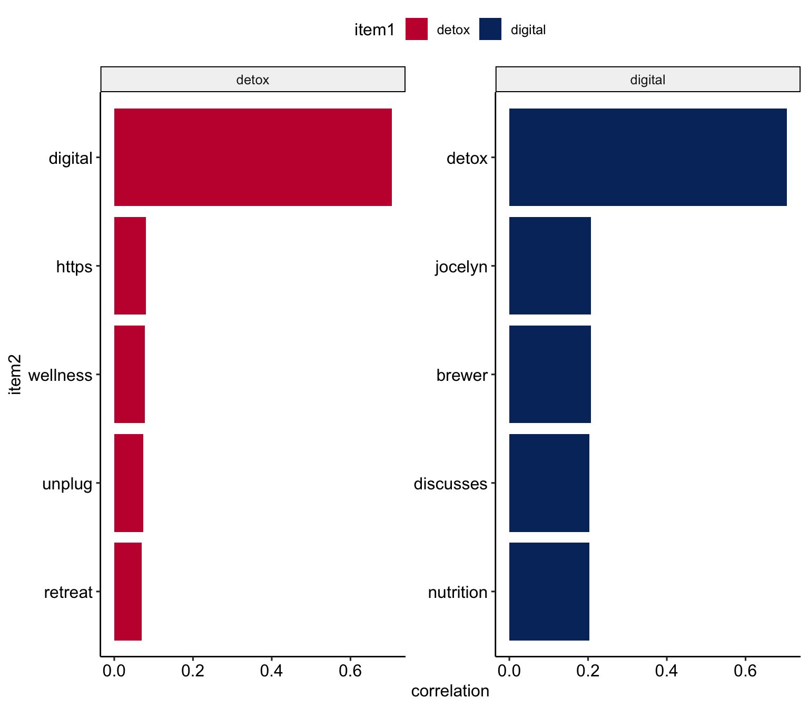
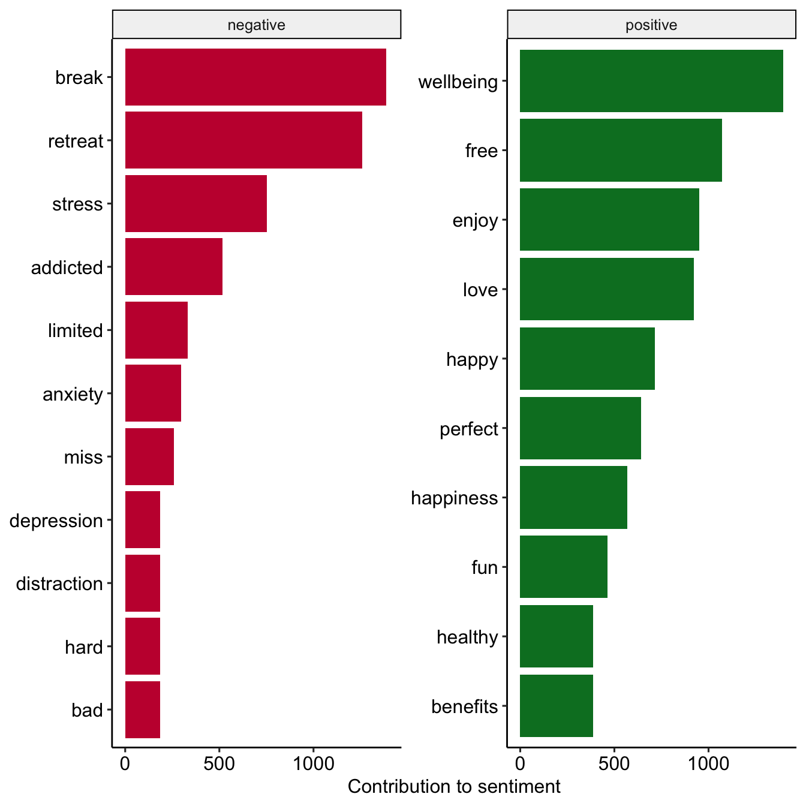
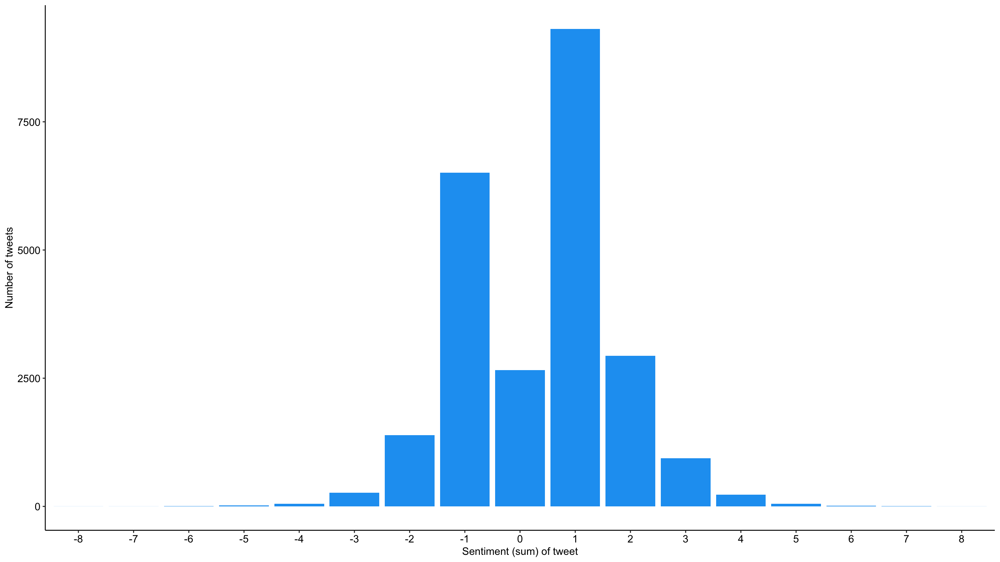
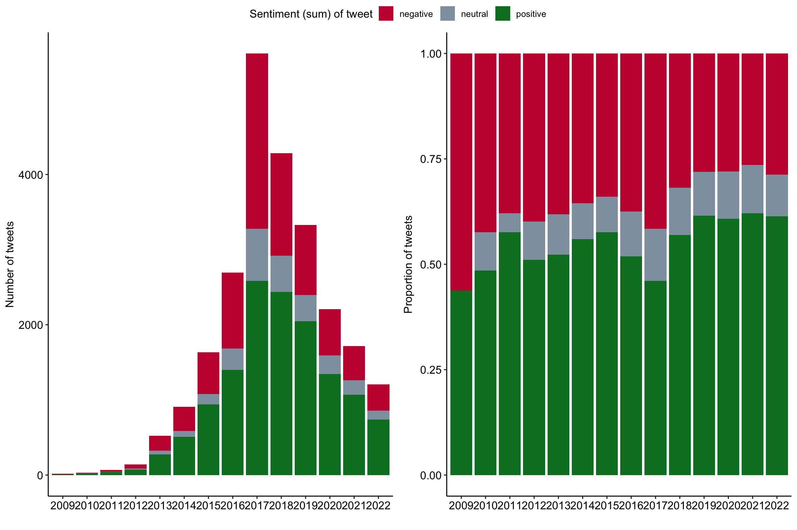

source(here::here("slides/schedule.R"))
if (!require("pacman")) install.packages("pacman")
pacman::p_load(
here, qs, # file management
magrittr, janitor, # data wrangling
easystats, sjmisc, # data analysis
tidytext, textdata, widyr, # text processing
ggpubr, ggwordcloud, # visualization
gt, gtExtras, # fancy tables
tidyverse # load last to avoid masking issues
)Showcase 09: 🔨 Text as data in R
Digital disconnection on Twitter
Background
Increasing trend towards more conscious use of digital media (devices), including (deliberate) non-use with the aim to restore or improve psychological well-being (among other factors)
But how do “we” talk about digital detox/disconnection: 💊 drug, 👹 demon or 🍩 donut?
Todays’s data basis: Twitter dataset
- Collection of all tweets up to the beginning of 2023 that mention or discuss digital detox (and similar terms) on Twitter (not 𝕏)
- Initial query is searching for “digital detox”, “#digitaldetox”, “digital_detox”
- Access via official Academic-Twitter-API via academictwitteR (Barrie and Ho 2021) at the beginning of last year
Preparation
Import and process the data
# Import raw data from local
tweets <- qs::qread(here("local_data/tweets-digital_detox.qs"))$raw %>%
janitor::clean_names()
# Initial data processing
tweets_correct <- tweets %>%
mutate(
# reformat and create datetime variables
across(created_at, ~ymd_hms(.)), # convert to dttm format
year = year(created_at),
month = month(created_at),
day = day(created_at),
hour = hour(created_at),
minute = minute(created_at),
# create addtional variables
retweet_dy = str_detect(text, "^RT"), # identify retweets
detox_dy = str_detect(text, "#digitaldetox")
) %>%
distinct(tweet_id, .keep_all = TRUE)
# Filter relevant tweets
tweets_detox <- tweets_correct %>%
filter(
detox_dy == TRUE, # only tweets with #digitaldetox
retweet_dy == FALSE, # no retweets
lang == "en" # only english tweets
)Digital disconnection on (not 𝕏)
The structure of the data set & available variables
tweets_correct %>% glimpse()Rows: 361,408
Columns: 37
$ tweet_id <chr> "7223508762", "7222271007", "7219735500", "7216…
$ user_username <chr> "Princessbride24", "winnerandy", "the_enthusias…
$ text <chr> "@Ali_Sweeney detox same week as the digital cl…
$ created_at <dttm> 2009-12-31 05:25:55, 2009-12-31 04:44:20, 2009…
$ in_reply_to_user_id <chr> "23018333", NA, NA, NA, NA, NA, NA, "19475829",…
$ author_id <chr> "16157429", "14969949", "16217478", "18001568",…
$ lang <chr> "en", "en", "en", "en", "en", "en", "en", "en",…
$ possibly_sensitive <lgl> FALSE, FALSE, FALSE, FALSE, FALSE, FALSE, FALSE…
$ conversation_id <chr> "7222577237", "7222271007", "7219735500", "7216…
$ user_created_at <chr> "2008-09-06T15:13:58.000Z", "2008-06-01T07:34:3…
$ user_protected <lgl> FALSE, FALSE, FALSE, FALSE, FALSE, FALSE, FALSE…
$ user_name <chr> "Sam", "Andrew", "The Enthusiast", "🌻BahSun🌻"…
$ user_verified <lgl> FALSE, FALSE, FALSE, FALSE, FALSE, FALSE, FALSE…
$ user_description <chr> "As you wish.", "Life is a playground, so enjoy…
$ user_location <chr> "Houston", "California", "Melbourne, Australia"…
$ user_url <chr> "https://t.co/hchLJvesW1", NA, "http://t.co/bLK…
$ user_profile_image_url <chr> "https://pbs.twimg.com/profile_images/587051289…
$ user_pinned_tweet_id <chr> NA, NA, NA, NA, "1285575168010735621", NA, NA, …
$ retweet_count <int> 0, 0, 0, 0, 0, 0, 0, 0, 0, 0, 0, 0, 0, 0, 0, 0,…
$ like_count <int> 0, 0, 1, 0, 0, 0, 0, 0, 0, 0, 0, 0, 0, 0, 0, 0,…
$ quote_count <int> 0, 0, 0, 0, 0, 0, 0, 0, 0, 0, 0, 0, 0, 0, 0, 0,…
$ user_tweet_count <int> 3905, 18808, 4494, 35337, 284181, 18907, 39562,…
$ user_list_count <int> 7, 12, 101, 49, 540, 82, 91, 12, 117, 46, 192, …
$ user_followers_count <int> 103, 481, 2118, 693, 17677, 2527, 8784, 100, 26…
$ user_following_count <int> 370, 1488, 391, 317, 16470, 320, 11538, 120, 25…
$ sourcetweet_type <chr> NA, NA, NA, NA, NA, NA, NA, NA, NA, NA, NA, NA,…
$ sourcetweet_id <chr> NA, NA, NA, NA, NA, NA, NA, NA, NA, NA, NA, NA,…
$ sourcetweet_text <chr> NA, NA, NA, NA, NA, NA, NA, NA, NA, NA, NA, NA,…
$ sourcetweet_lang <chr> NA, NA, NA, NA, NA, NA, NA, NA, NA, NA, NA, NA,…
$ sourcetweet_author_id <chr> NA, NA, NA, NA, NA, NA, NA, NA, NA, NA, NA, NA,…
$ year <dbl> 2009, 2009, 2009, 2009, 2009, 2009, 2009, 2009,…
$ month <dbl> 12, 12, 12, 12, 12, 12, 12, 12, 12, 12, 12, 12,…
$ day <int> 31, 31, 31, 31, 30, 30, 30, 29, 28, 28, 27, 27,…
$ hour <int> 5, 4, 3, 1, 22, 2, 0, 20, 21, 1, 19, 8, 8, 3, 9…
$ minute <int> 25, 44, 22, 42, 49, 31, 39, 23, 45, 47, 31, 28,…
$ retweet_dy <lgl> FALSE, FALSE, FALSE, FALSE, TRUE, FALSE, FALSE,…
$ detox_dy <lgl> FALSE, FALSE, FALSE, FALSE, FALSE, FALSE, FALSE…Bonus: Distribution statistics
tweets_correct %>% skimr::skim()| Name | Piped data |
| Number of rows | 361408 |
| Number of columns | 37 |
| _______________________ | |
| Column type frequency: | |
| character | 19 |
| logical | 5 |
| numeric | 12 |
| POSIXct | 1 |
| ________________________ | |
| Group variables | None |
Variable type: character
| skim_variable | n_missing | complete_rate | min | max | empty | n_unique | whitespace |
|---|---|---|---|---|---|---|---|
| tweet_id | 0 | 1.00 | 9 | 19 | 0 | 361408 | 0 |
| user_username | 0 | 1.00 | 2 | 15 | 0 | 185679 | 0 |
| text | 0 | 1.00 | 13 | 938 | 0 | 343311 | 0 |
| in_reply_to_user_id | 321844 | 0.11 | 2 | 19 | 0 | 30993 | 0 |
| author_id | 0 | 1.00 | 3 | 19 | 0 | 185679 | 0 |
| lang | 0 | 1.00 | 2 | 3 | 0 | 60 | 0 |
| conversation_id | 0 | 1.00 | 9 | 19 | 0 | 354482 | 0 |
| user_created_at | 0 | 1.00 | 24 | 24 | 0 | 185594 | 0 |
| user_name | 0 | 1.00 | 0 | 50 | 50 | 178328 | 0 |
| user_description | 0 | 1.00 | 0 | 353 | 26741 | 166383 | 0 |
| user_location | 66727 | 0.82 | 1 | 147 | 0 | 51237 | 65 |
| user_url | 103146 | 0.71 | 12 | 58 | 0 | 115594 | 0 |
| user_profile_image_url | 0 | 1.00 | 0 | 226 | 44 | 182266 | 0 |
| user_pinned_tweet_id | 232501 | 0.36 | 4 | 19 | 0 | 56397 | 0 |
| sourcetweet_type | 349949 | 0.03 | 6 | 6 | 0 | 1 | 0 |
| sourcetweet_id | 349949 | 0.03 | 11 | 19 | 0 | 10480 | 0 |
| sourcetweet_text | 349949 | 0.03 | 1 | 755 | 0 | 10283 | 0 |
| sourcetweet_lang | 349949 | 0.03 | 2 | 3 | 0 | 42 | 0 |
| sourcetweet_author_id | 349949 | 0.03 | 2 | 19 | 0 | 7419 | 0 |
Variable type: logical
| skim_variable | n_missing | complete_rate | mean | count |
|---|---|---|---|---|
| possibly_sensitive | 0 | 1 | 0.01 | FAL: 359068, TRU: 2340 |
| user_protected | 0 | 1 | 0.00 | FAL: 361408 |
| user_verified | 0 | 1 | 0.06 | FAL: 340005, TRU: 21403 |
| retweet_dy | 0 | 1 | 0.02 | FAL: 354735, TRU: 6673 |
| detox_dy | 0 | 1 | 0.16 | FAL: 303396, TRU: 58012 |
Variable type: numeric
| skim_variable | n_missing | complete_rate | mean | sd | p0 | p25 | p50 | p75 | p100 | hist |
|---|---|---|---|---|---|---|---|---|---|---|
| retweet_count | 0 | 1 | 0.77 | 21.53 | 0 | 0 | 0 | 0.00 | 9035 | ▇▁▁▁▁ |
| like_count | 0 | 1 | 3.17 | 219.89 | 0 | 0 | 0 | 1.00 | 98181 | ▇▁▁▁▁ |
| quote_count | 0 | 1 | 0.09 | 11.07 | 0 | 0 | 0 | 0.00 | 5213 | ▇▁▁▁▁ |
| user_tweet_count | 0 | 1 | 60860.29 | 173889.51 | 1 | 2933 | 12371 | 41843.00 | 9641956 | ▇▁▁▁▁ |
| user_list_count | 0 | 1 | 375.59 | 2643.28 | 0 | 7 | 46 | 171.00 | 216734 | ▇▁▁▁▁ |
| user_followers_count | 0 | 1 | 37077.25 | 532883.29 | 0 | 274 | 1157 | 4724.25 | 61075617 | ▇▁▁▁▁ |
| user_following_count | 0 | 1 | 2952.88 | 18952.23 | 0 | 221 | 808 | 2067.00 | 1407439 | ▇▁▁▁▁ |
| year | 0 | 1 | 2016.96 | 2.73 | 2007 | 2015 | 2017 | 2019.00 | 2022 | ▁▂▇▇▅ |
| month | 0 | 1 | 6.36 | 3.49 | 1 | 3 | 7 | 9.00 | 12 | ▇▅▅▆▇ |
| day | 0 | 1 | 15.50 | 8.95 | 1 | 7 | 15 | 23.00 | 31 | ▇▆▆▆▆ |
| hour | 0 | 1 | 12.62 | 6.08 | 0 | 8 | 13 | 17.00 | 23 | ▃▅▆▇▅ |
| minute | 0 | 1 | 27.09 | 17.93 | 0 | 11 | 27 | 43.00 | 59 | ▇▆▆▆▆ |
Variable type: POSIXct
| skim_variable | n_missing | complete_rate | min | max | median | n_unique |
|---|---|---|---|---|---|---|
| created_at | 0 | 1 | 2007-11-19 09:14:10 | 2022-12-31 23:18:38 | 2017-04-26 08:15:03 | 352271 |
Distribution of tweets with reference to digital detox over time
tweets_correct %>%
ggplot(aes(x = as.factor(year), fill = retweet_dy)) +
geom_bar() +
labs(
x = "",
y = "Number of tweets",
fill = "Is the tweet a retweet?"
) +
scale_fill_manual(values = c("#1DA1F2", "#004389")) +
theme_pubr() +
# add annotations
annotate(
"text",
x = 14, y = 55000,
label = "Increase of character limit from 140 to 280") +
geom_curve(
data = data.frame(
x = 14.2965001234837,y = 53507.2283841571,
xend = 11.5275706534335, yend = 45412.4966032138),
mapping = aes(x = x, y = y, xend = xend, yend = yend),
angle = 127L,
curvature = 0.28,
arrow = arrow(30L, unit(0.1, "inches"), "last", "closed"),
inherit.aes = FALSE)
Tweets with reference to ditigal detox by (participating) users
tweets_correct %>%
group_by(author_id) %>%
summarize(n = n()) %>%
mutate(
n_grp = case_when(
n <= 1 ~ 1,
n > 1 & n <= 10 ~ 2,
n > 10 & n <= 25 ~ 3,
n > 25 & n <= 50 ~ 4,
n > 50 & n <= 75 ~ 5,
n > 75 & n <= 100 ~ 6,
n > 100 ~ 7
),
n_grp_fct = factor(
n_grp,
levels = c(1:7),
labels = c(
" 1",
" 2 - 10", "11 - 25",
"26 - 50", "50 - 75",
"75 -100", "> 100")
)
) %>%
sjmisc::frq(n_grp_fct) %>%
as.data.frame() %>%
select(val, frq:cum.prc) %>%
# create table
gt() %>%
# tab_header(
# title = "Tweets by users with a least on tweet"
# ) %>%
cols_label(
val = "Number of tweets by user",
frq = "n",
raw.prc = html("%<sub>raw</sub>"),
cum.prc = html("%<sub>cum</sub>")
) %>%
gt_theme_538()| Number of tweets by user | n | %raw | %cum |
|---|---|---|---|
| 1 | 143364 | 77.21 | 77.21 |
| 2 - 10 | 39981 | 21.53 | 98.74 |
| 11 - 25 | 1647 | 0.89 | 99.63 |
| 26 - 50 | 435 | 0.23 | 99.86 |
| 50 - 75 | 88 | 0.05 | 99.91 |
| 75 -100 | 55 | 0.03 | 99.94 |
| > 100 | 109 | 0.06 | 100.00 |
| NA | 0 | 0.00 | NA |
Tweets with reference to ditigal detox by language
tweets_correct %>%
sjmisc::frq(
lang,
sort.frq = c("desc"),
min.frq = 2000
) %>%
as.data.frame() %>%
select(val, frq:cum.prc) %>%
# create table
gt() %>%
# tab_header(
# title = "Language of the collected tweets"
# ) %>%
cols_label(
val = "Twitter language code",
frq = "n",
raw.prc = html("%<sub>raw</sub>"),
cum.prc = html("%<sub>cum</sub>")
) %>%
gt_theme_538()| Twitter language code | n | %raw | %cum |
|---|---|---|---|
| en | 274351 | 75.91 | 75.91 |
| fr | 20407 | 5.65 | 81.56 |
| es | 16248 | 4.50 | 86.05 |
| de | 14091 | 3.90 | 89.95 |
| pt | 7127 | 1.97 | 91.92 |
| it | 5999 | 1.66 | 93.58 |
| da | 3490 | 0.97 | 94.55 |
| in | 3095 | 0.86 | 95.41 |
| ja | 2428 | 0.67 | 96.08 |
| n < 2000 | 14172 | 3.92 | 100.00 |
| NA | 0 | 0.00 | NA |
Text as data in R (Part I)
Build a subsample: Tweets containing #digitaldetox
tweets_detox <- tweets_correct %>%
filter(
detox_dy == TRUE, # only tweets with #digitaldetox
retweet_dy == FALSE, # no retweets
lang == "en" # only english tweets
)Expand for full code
tweets_correct %>%
ggplot(aes(x = as.factor(year), fill = detox_dy)) +
geom_bar() +
labs(
x = "",
y = "Number of tweets",
fill = "#digitaldetox used in tweet?"
) +
scale_fill_manual(values = c("#A0ACBD50", "#1DA1F2")) +
theme_pubr() 
Bonus: distribution statistics
tweets_detox %>% skimr::skim()| Name | Piped data |
| Number of rows | 46670 |
| Number of columns | 37 |
| _______________________ | |
| Column type frequency: | |
| character | 19 |
| logical | 5 |
| numeric | 12 |
| POSIXct | 1 |
| ________________________ | |
| Group variables | None |
Variable type: character
| skim_variable | n_missing | complete_rate | min | max | empty | n_unique | whitespace |
|---|---|---|---|---|---|---|---|
| tweet_id | 0 | 1.00 | 10 | 19 | 0 | 46670 | 0 |
| user_username | 0 | 1.00 | 3 | 15 | 0 | 15383 | 0 |
| text | 0 | 1.00 | 18 | 873 | 0 | 45039 | 0 |
| in_reply_to_user_id | 43310 | 0.07 | 3 | 19 | 0 | 2617 | 0 |
| author_id | 0 | 1.00 | 3 | 19 | 0 | 15383 | 0 |
| lang | 0 | 1.00 | 2 | 2 | 0 | 1 | 0 |
| conversation_id | 0 | 1.00 | 10 | 19 | 0 | 46235 | 0 |
| user_created_at | 0 | 1.00 | 24 | 24 | 0 | 15383 | 0 |
| user_name | 0 | 1.00 | 1 | 50 | 0 | 15252 | 0 |
| user_description | 0 | 1.00 | 0 | 227 | 1089 | 14612 | 0 |
| user_location | 5596 | 0.88 | 1 | 113 | 0 | 5834 | 2 |
| user_url | 5863 | 0.87 | 18 | 44 | 0 | 11413 | 0 |
| user_profile_image_url | 0 | 1.00 | 59 | 151 | 0 | 15317 | 0 |
| user_pinned_tweet_id | 21644 | 0.54 | 9 | 19 | 0 | 4756 | 0 |
| sourcetweet_type | 44990 | 0.04 | 6 | 6 | 0 | 1 | 0 |
| sourcetweet_id | 44990 | 0.04 | 18 | 19 | 0 | 1620 | 0 |
| sourcetweet_text | 44990 | 0.04 | 23 | 402 | 0 | 1620 | 0 |
| sourcetweet_lang | 44990 | 0.04 | 2 | 3 | 0 | 14 | 0 |
| sourcetweet_author_id | 44990 | 0.04 | 4 | 19 | 0 | 1227 | 0 |
Variable type: logical
| skim_variable | n_missing | complete_rate | mean | count |
|---|---|---|---|---|
| possibly_sensitive | 0 | 1 | 0.00 | FAL: 46559, TRU: 111 |
| user_protected | 0 | 1 | 0.00 | FAL: 46670 |
| user_verified | 0 | 1 | 0.03 | FAL: 45200, TRU: 1470 |
| retweet_dy | 0 | 1 | 0.00 | FAL: 46670 |
| detox_dy | 0 | 1 | 1.00 | TRU: 46670 |
Variable type: numeric
| skim_variable | n_missing | complete_rate | mean | sd | p0 | p25 | p50 | p75 | p100 | hist |
|---|---|---|---|---|---|---|---|---|---|---|
| retweet_count | 0 | 1 | 0.70 | 30.82 | 0 | 0.00 | 0.0 | 0 | 6618 | ▇▁▁▁▁ |
| like_count | 0 | 1 | 2.88 | 220.54 | 0 | 0.00 | 0.0 | 1 | 47308 | ▇▁▁▁▁ |
| quote_count | 0 | 1 | 0.06 | 1.62 | 0 | 0.00 | 0.0 | 0 | 340 | ▇▁▁▁▁ |
| user_tweet_count | 0 | 1 | 27905.41 | 76117.39 | 1 | 1809.00 | 10199.0 | 16045 | 1268964 | ▇▁▁▁▁ |
| user_list_count | 0 | 1 | 208.86 | 557.75 | 0 | 15.00 | 109.0 | 163 | 25072 | ▇▁▁▁▁ |
| user_followers_count | 0 | 1 | 7627.12 | 74560.68 | 0 | 519.25 | 2410.0 | 5032 | 7977533 | ▇▁▁▁▁ |
| user_following_count | 0 | 1 | 2223.94 | 6345.92 | 0 | 398.00 | 1749.5 | 1989 | 475935 | ▇▁▁▁▁ |
| year | 0 | 1 | 2017.40 | 2.24 | 2009 | 2016.00 | 2017.0 | 2019 | 2022 | ▁▂▅▇▃ |
| month | 0 | 1 | 6.43 | 3.48 | 1 | 3.00 | 7.0 | 9 | 12 | ▇▅▅▆▇ |
| day | 0 | 1 | 15.58 | 8.77 | 1 | 8.00 | 16.0 | 23 | 31 | ▇▆▇▆▆ |
| hour | 0 | 1 | 12.50 | 5.52 | 0 | 9.00 | 13.0 | 16 | 23 | ▂▅▆▇▃ |
| minute | 0 | 1 | 24.62 | 17.97 | 0 | 7.00 | 25.0 | 39 | 59 | ▇▅▆▃▃ |
Variable type: POSIXct
| skim_variable | n_missing | complete_rate | min | max | median | n_unique |
|---|---|---|---|---|---|---|
| created_at | 0 | 1 | 2009-01-04 12:10:04 | 2022-12-31 21:23:34 | 2017-09-08 10:45:05 | 46448 |
Transform data to tidy text
# Common HTML entities
remove_reg <- "&|<|>"
# Create tidy data
tweets_tidy <- tweets_detox %>%
# Remove HTML entities
mutate(text = str_remove_all(text, remove_reg)) %>%
# Tokenization
tidytext::unnest_tokens("text", text) %>%
# Remove stopwords
filter(!text %in% tidytext::stop_words$word)
# Preview
tweets_tidy %>%
select(tweet_id, user_username, text) %>%
print(n = 5)# A tibble: 639,459 × 3
tweet_id user_username text
<chr> <chr> <chr>
1 5777201122 pblackshaw blackberry
2 5777201122 pblackshaw iphone
3 5777201122 pblackshaw read
4 5777201122 pblackshaw pew
5 5777201122 pblackshaw report
# ℹ 639,454 more rowsSummarize all tokens over all tweets
# Create summarized data
tweets_summarized <- tweets_tidy %>%
count(text, sort = TRUE)
# Preview Top 15 token
tweets_summarized %>%
print(n = 15)# A tibble: 87,172 × 2
text n
<chr> <int>
1 t.co 57530
2 https 52890
3 digitaldetox 46642
4 digital 8521
5 detox 6623
6 time 6000
7 http 4674
8 phone 4213
9 unplug 4021
10 day 2939
11 life 2548
12 social 2449
13 mindfulness 2408
14 media 2264
15 technology 2065
# ℹ 87,157 more rowsVisualization of Top 100 token
tweets_summarized %>%
top_n(100) %>%
ggplot(aes(label = text, size = n)) +
ggwordcloud::geom_text_wordcloud() +
scale_size_area(max_size = 30) +
theme_minimal()Modeling realtionships between words
Count word pairs within tweets
# Create word paris
tweets_word_pairs <- tweets_tidy %>%
widyr::pairwise_count(
text,
tweet_id,
sort = TRUE)
# Preview
tweets_word_pairs %>%
print(n = 15)# A tibble: 3,466,216 × 3
item1 item2 n
<chr> <chr> <dbl>
1 t.co digitaldetox 40640
2 digitaldetox t.co 40640
3 t.co https 36605
4 https t.co 36605
5 https digitaldetox 36486
6 digitaldetox https 36486
7 digital digitaldetox 7791
8 digitaldetox digital 7791
9 t.co digital 7365
10 digital t.co 7365
11 https digital 6856
12 digital https 6856
13 detox digitaldetox 6004
14 digitaldetox detox 6004
15 t.co detox 5672
# ℹ 3,466,201 more rowsSummarize and correlate tokens within tweets
# Create word correlation
tweets_pairs_corr <- tweets_tidy %>%
group_by(text) %>%
filter(n() >= 300) %>%
pairwise_cor(
text,
tweet_id,
sort = TRUE)
# Preview
tweets_pairs_corr %>%
print(n = 15)# A tibble: 41,820 × 3
item1 item2 correlation
<chr> <chr> <dbl>
1 jocelyn brewer 0.999
2 brewer jocelyn 0.999
3 jocelyn discusses 0.983
4 discusses jocelyn 0.983
5 discusses brewer 0.982
6 brewer discusses 0.982
7 icphenomenallyu discuss 0.981
8 discuss icphenomenallyu 0.981
9 taniamulry wealth 0.979
10 wealth taniamulry 0.979
11 jocelyn nutrition 0.968
12 nutrition jocelyn 0.968
13 nutrition brewer 0.967
14 brewer nutrition 0.967
15 discusses nutrition 0.951
# ℹ 41,805 more rowsDisplay correlates for specific token
tweets_pairs_corr %>%
filter(
item1 %in% c("detox", "digital")
) %>%
group_by(item1) %>%
slice_max(correlation, n = 5) %>%
ungroup() %>%
mutate(
item2 = reorder(item2, correlation)
) %>%
ggplot(
aes(item2, correlation, fill = item1)
) +
geom_bar(stat = "identity") +
facet_wrap(~ item1, scales = "free") +
coord_flip() +
scale_fill_manual(
values = c("#C50F3C", "#04316A")) +
theme_pubr()
Dictionary based approach: Sentiment analysis
Most commmon positive and negative words
tweets_sentiment_count <- tweets_tidy %>%
inner_join(
get_sentiments("bing"),
by = c("text" = "word"),
relationship = "many-to-many") %>%
count(text, sentiment)
# Preview
tweets_sentiment_count %>%
group_by(sentiment) %>%
slice_max(n, n = 10) %>%
ungroup() %>%
mutate(text = reorder(text, n)) %>%
ggplot(aes(n, text, fill = sentiment)) +
geom_col(show.legend = FALSE) +
facet_wrap(
~sentiment, scales = "free_y") +
labs(x = "Contribution to sentiment",
y = NULL) +
scale_fill_manual(
values = c("#C50F3C", "#007D29")) +
theme_pubr()
Link word sentiment to tidy data
tweets_sentiment <- tweets_tidy %>%
inner_join(
get_sentiments("bing"),
by = c("text" = "word"),
relationship = "many-to-many") %>%
count(tweet_id, sentiment) %>%
pivot_wider(names_from = sentiment, values_from = n, values_fill = 0) %>%
mutate(sentiment = positive - negative)
# Check
tweets_sentiment # A tibble: 24,372 × 4
tweet_id positive negative sentiment
<chr> <int> <int> <int>
1 1000009901563838465 3 0 3
2 1000038819520008193 1 0 1
3 1000042717492187136 4 0 4
4 1000043574673715203 1 1 0
5 1000075155891281925 4 0 4
6 1000086637987139590 1 0 1
7 1000094334660825088 1 0 1
8 1000133715194920960 1 0 1
9 1000255467434729472 0 1 -1
10 1000271209353895938 1 1 0
# ℹ 24,362 more rowsOverall distribution sentiment by tweets
tweets_sentiment %>%
ggplot(aes(as.factor(sentiment))) +
geom_bar(fill = "#1DA1F2") +
labs(
x = "Sentiment (sum) of tweet",
y = "Number of tweets"
) +
theme_pubr()
Development of tweet sentiment over the years
Expand for full code
# Create first graph
g1 <- tweets_correct %>%
filter(tweet_id %in% tweets_sentiment$tweet_id) %>%
left_join(tweets_sentiment) %>%
sjmisc::rec(
sentiment,
rec = "-8:-1=negative; 0=neutral; 1:8=positive") %>%
ggplot(aes(x = as.factor(year), fill = as.factor(sentiment_r))) +
geom_bar() +
labs(
x = "",
y = "Number of tweets",
fill = "Sentiment (sum) of tweet") +
scale_fill_manual(values = c("#C50F3C", "#90A0AF", "#007D29")) +
theme_pubr()
#theme(axis.text.x = element_text(angle = 90, vjust = 0.5, hjust=1))
# Create second graph
g2 <- tweets_correct %>%
filter(tweet_id %in% tweets_sentiment$tweet_id) %>%
left_join(tweets_sentiment) %>%
sjmisc::rec(
sentiment,
rec = "-8:-1=negative; 0=neutral; 1:8=positive") %>%
ggplot(aes(x = as.factor(year), fill = as.factor(sentiment_r))) +
geom_bar(position = "fill") +
labs(
x = "",
y = "Proportion of tweets",
fill = "Sentiment (sum) of tweet") +
scale_fill_manual(values = c("#C50F3C", "#90A0AF", "#007D29")) +
theme_pubr()
# COMBINE GRPAHS
ggarrange(g1, g2,
nrow = 1, ncol = 2,
align = "hv",
common.legend = TRUE) 
References
Barrie, Christopher, and Justin Ho. 2021. “academictwitteR: An r Package to Access the Twitter Academic Research Product Track V2 API Endpoint.” Journal of Open Source Software 6 (62): 3272. https://doi.org/10.21105/joss.03272.
Nassen, Lise-Marie, Heidi Vandebosch, Karolien Poels, and Kathrin Karsay. 2023. “Opt-Out, Abstain, Unplug. A Systematic Review of the Voluntary Digital Disconnection Literature.” Telematics and Informatics 81 (June): 101980. https://doi.org/10.1016/j.tele.2023.101980.